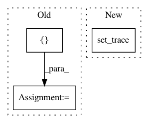

f7fd8a8395cbb90973dbd3ab7b55cda80865b656,tensorflow_datasets/scripts/download_and_prepare.py,,main,#Any#,57
Before Change
if not FLAGS.compute_stats:
return
// TODO(rsepassi): Get splits from info
for split in [tfds.Split.TRAIN, tfds.Split.TEST]:
compute_stats(builder, split)
def compute_stats(builder, split):
Print statistics for this split.
dataset = builder.as_dataset(split=split)
if FLAGS.debug:
After Change
if FLAGS.debug:
dataset = builder.as_dataset(split=tfds.Split.TRAIN)
iterator = tf.contrib.eager.Iterator(dataset)
pdb.set_trace()
del iterator
return
In pattern: SUPERPATTERN
Frequency: 3
Non-data size: 3
Instances
Project Name: tensorflow/datasets
Commit Name: f7fd8a8395cbb90973dbd3ab7b55cda80865b656
Time: 2018-11-16
Author: afrozm@google.com
File Name: tensorflow_datasets/scripts/download_and_prepare.py
Class Name:
Method Name: main
Project Name: facebookresearch/ParlAI
Commit Name: 72c304fa7cac16ed19d8bc75a017f17c8073dd2f
Time: 2020-02-13
Author: roller@fb.com
File Name: projects/image_chat/transresnet_multimodal/transresnet_multimodal.py
Class Name: TransresnetMultimodalAgent
Method Name: report
Project Name: NeuromorphicProcessorProject/snn_toolbox
Commit Name: 74234df1f422cf85dff82a2f7b2b9c1e47358826
Time: 2016-08-02
Author: iulialexandra@ini.uzh.ch
File Name: snntoolbox/tests/rate_simulation_iulia.py
Class Name:
Method Name: